7210B55 R.R. BOOT FLOOR
- Path
- Procedures > 72 PANELS AND FRAME > 7210 REMOVING REFITTING > 7210B STRUCTURE ELEMENTS-CENTRAL AND REAR PART > 7210B55 R.R. BOOT FLOOR
- Kind
- repair procedure (removal / refitting; the operation number is the code)
- Applies to
- all engines; all production periods
- Interactive page
- https://sloeber94.github.io/elrnDB-aGt/en/#/125002043
Applies to: all engines; all production periods
 Removing
Removing
 Refitting
Refitting- Op. 7210B70 REAR TRIM
- Check that the components connected are not distorted by checking the bodyshell alignment measurements using suitable equipment (gauges, templates or jigs).
- Straighten the body as necessary.
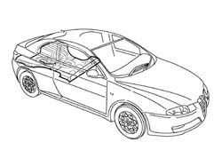
Applies to: all engines; all production periods
- Use the power saw following the dotted lines in the diagram.
- Sections representing the most important cutting points in order to allow the operator to adjust the position and the depth of the cut so as not to damage the panels underneath.
- Remove the floor in the centre area.
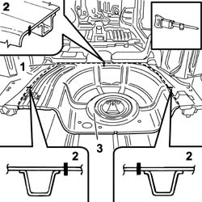
Applies to: all engines; all production periods
- Trace the area to be cut using the circular saw on the floor.
1. Use the circular saw following the dotted lines in the diagram.
2. Cutting sections.
- Use the rotary brush to clean the edges of the panel to highlight the spot welds.
3. Use the drill and remove the spot welds shown in the diagram.
4. Use the chamfering machine on the spot welds shown.
- Use the hammer and chisel to remove the spot welds chamfered previously.
5. Remove the edges of the panel on the boot floor side members.
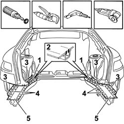
Applies to: all engines; all production periods
- Use the vibrating knife and special blade to remove the P.V.C. treatment.
- Straighten the edges of the vehicle using a hammer and dolly block.
- Remove the spot weld residues using a disc grinder.
- Apply electro-galvanizing paint.
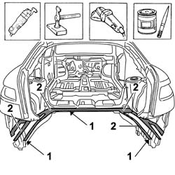
Applies to: all engines; all production periods
- Continue inside the passenger compartment and proceed with the removal of the reinforcement brackets between the floor and inner wheel arch.
- Using the drill, make holes in the reinforcement (1a) between the floor and the wheel arch at the points (1b) shown in the diagram.
- Remove the reinforcement between the floor and the wheel arch.
- Repeat the operation on the left side.
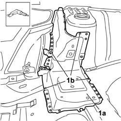
Applies to: all engines; all production periods
- Working in the right rear wheel arch housing (1a) make holes using the drill at the points (1b) shown in the diagram.
- Working inside the passenger compartment, use the chamfering machine on the spot welds shown.
- Remove the lower reinforcement between the floor and the wheel arch.
- Repeat the operation on the left side of the vehicle.
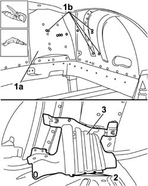
Applies to: all engines; all production periods
- Use the power saw following the dotted lines (1a) in the diagram, then remove the edges of the panel (1b) taking care not to damage the floor supporting crossmember (1c) underneath.
- Section representing the most important cutting points in order to allow the operator to adjust the position and the depth of the cut so as not to damage the panels underneath.
- Use the power saw following the dotted lines (3a) in the diagram, then remove the edges of the panel (3b) taking care not to damage the floor supporting crossmember (3c) underneath.
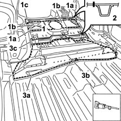
Applies to: all engines; all production periods
1. Use the rotary brush to clean the edges of the panel to highlight the spot welds.
2. Use the chamfering machine on the spot welds shown.
3. Use the drill and chamfer the spot welds in the area shown in the diagram.
- Use the hammer and chisel to remove the spot welds chamfered previously.
4. Remove the edges of the boot floor panel.
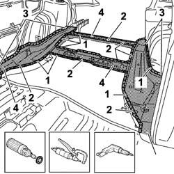
Applies to: all engines; all production periods
- Straighten the edges of the panel using a hammer and dolly block.
- Remove the spot weld residues using a disc grinder.
- Use a rotary brush and clean the areas treated previously.
- Apply electro-galvanizing paint.
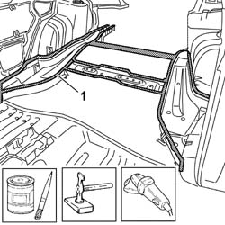
Applies to: all engines; all production periods
Refitting
Removing- Position the replacement part in the vehicle and, using the drill, make holes at the points shown in the diagram, by the two centre floor supporting crossmembers.
- Drill the replacement part at the points shown in the diagram by the left and right rear side members.
- Drill the replacement part at the points shown in the diagram on the edge of the front panel.
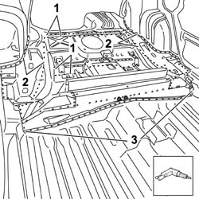
Applies to: all engines; all production periods
- With the replacement part at the bench, remove the anti-corrosion treatment from the inner and outer part of the replacement part in the area shown.
- Apply electro-weldable paint to the edges in contact with the vehicle.
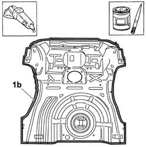
Applies to: all engines; all production periods
- Position the floor in the vehicle and secure it using self-locking clamps.
- Use the MIG welder to fill weld the openings made previously in the front part of the replacement panel.
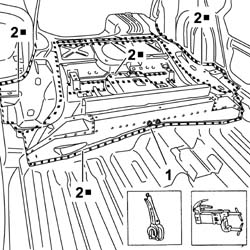
Applies to: all engines; all production periods
- Use the spot welder and work in the areas shown in the diagram at the rear of the replacement part.
- Use the MIG welder to fill weld the openings made previously in the rear part of the replacement panel.
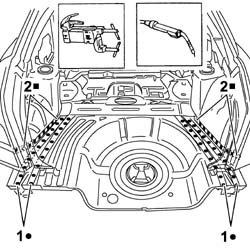
Applies to: all engines; all production periods
- Correct any distortions to the panel using a dolly block.
- Use a disc grinder to remove and level the welding residues.
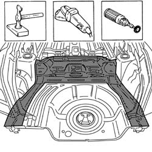
Applies to: all engines; all production periods
1. Position the reinforcement brackets (1a) and (1b) between the floor and the inner wheel arch at the bench, then proceed with straightening the edges of the panel using a hammer and dolly block.
- Remove the spot weld residues using a disc grinder.
- Use a rotary brush and clean the areas treated previously.
2. Apply electro-galvanizing paint.
- Repeat the operation for the left side floor reinforcement brackets.
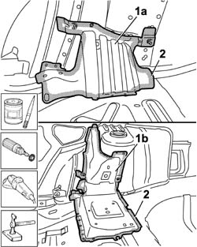
Applies to: all engines; all production periods
1. Position the lower reinforcement bracket (1a) between the floor and the wheel arch (1b), then secure it using self-locking clamps or parker screws.
- Check that the alignment is perfect.
2. Use a MIG welder and fill the openings made previously.
- Correct any distortions to the panel using a hammer and dolly block.
- Repeat the operation on the left side of the vehicle.
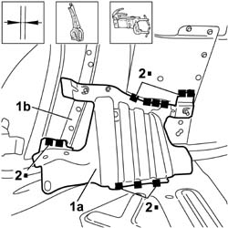
Applies to: all engines; all production periods
1. Position the upper reinforcement bracket (1a) between the floor and the wheel arch (1b), then secure it using self-locking clamps or parker screws.
- Check that the alignment is perfect.
2. Use a MIG welder and fill the openings made previously.
- Correct any distortions to the panel using a hammer and dolly block.
- Repeat the operation on the left side of the vehicle.
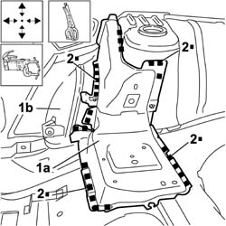
Applies to: all engines; all production periods
- Apply the anti-oxidant protective to the areas previously involved in the welding.
1. Seal the join lines between the replacement part and the vehicle using sealant.
- Renew the P.V.C. treatment.
2. Apply the sound insulation panels.
- Paint the load carrying compartment floor (following the recommended cycle).
- Proceed with the waxing stage.
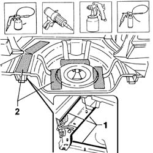
Applies to: all engines; all production periods